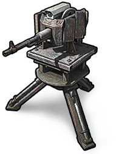
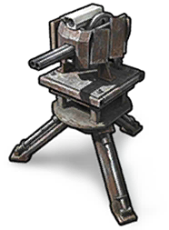
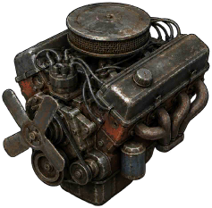
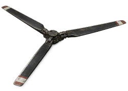
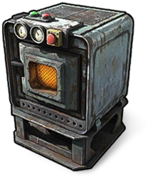
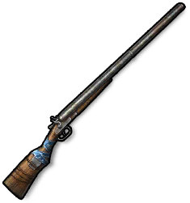
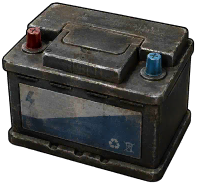

HelicopteroCopter HelicopteroCopter | 100 | — | 150 | — | — |
 Cartucho de oroGolden Bullet Cartucho de oroGolden Bullet | 100 | — | — | — | — |
 BuggyBuggy BuggyBuggy | 70 | — | 150 | — | — |
 TorretaTurret TorretaTurret | 50 | 5 | 25 | — | — |
 Cantera del clanClan Mining Quarry Cantera del clanClan Mining Quarry | 50 | — | 75 | 150 | — |
 Puerta BlindadaArmored door Puerta BlindadaArmored door | 35 | 10 | 35 | — | — |
 MotosierraChainsaw MotosierraChainsaw | 35 | 10 | — | — | — |
 Martillo neumáticoJackhammer Martillo neumáticoJackhammer | 35 | 10 | — | — | — |
 Máquina expendedoraVending Machine Máquina expendedoraVending Machine | 35 | — | 50 | — | — |
 Torreta de ametralladoraMachinegun Turret | 30 | 30 | — | — | — |
 Cantera mineraMining Quarry Cantera mineraMining Quarry | 25 | 5 | — | 150 | — |
 Mesa de trabajoWorkbench Mesa de trabajoWorkbench | 25 | — | — | 50 | — |
 Torreta de escopetaShotgun Turret | 20 | 20 | — | — | — |
 Rifle semiautomáticoSemi-Automatic Rifle Rifle semiautomáticoSemi-Automatic Rifle | 20 | 7 | 18 | — | — |
 Cuerpo de fusilRifle Body Cuerpo de fusilRifle Body | 20 | 2 | — | — | — |
 Pieza de fusilRifle Part Pieza de fusilRifle Part | 20 | 2 | — | — | — |
 Motor de vehículoVehicle Engine | 20 | — | 10 | — | — |
 Carga explosiva temporizadaTimed Explosive Charge Carga explosiva temporizadaTimed Explosive Charge | 20 | — | — | — | — |
 Cuerpo de rifle semiautomáticoSemi-Automatic Rifle Body Cuerpo de rifle semiautomáticoSemi-Automatic Rifle Body | 15 | 1 | — | — | — |
 Trampa de armasGun Trap Trampa de armasGun Trap | 15 | — | 30 | 12 | — |
 Disco duroHard Drive Disco duroHard Drive | 15 | — | — | — | — |
 Pistola artesanalHandmade Pistol Pistola artesanalHandmade Pistol | 12 | — | 12 | — | — |
 Muelle metálicoMetal Spring Muelle metálicoMetal Spring | 12 | — | 5 | — | — |
 ThompsonThompson ThompsonThompson | 10 | 6 | 20 | — | — |
 Mira HolográficaHolosight Mira HolográficaHolosight | 10 | 3 | — | — | — |
 Cuerpo SMGSMG Body Cuerpo SMGSMG Body | 10 | 1 | — | — | — |
 Basura tecnológicaTech Trash Basura tecnológicaTech Trash | 10 | 1 | — | — | — |
 Hélice de vehículoVehicle Propeller | 10 | — | 15 | — | — |
 SubfusilSubmachine Gun SubfusilSubmachine Gun | 10 | — | 12 | — | — |
 MisilRocket MisilRocket | 10 | — | 12 | — | — |
 Subfusil neumáticoPneumatic SMG Subfusil neumáticoPneumatic SMG | 10 | — | 12 | — | — |
 EngranajesGears EngranajesGears | 10 | — | 5 | — | — |
 Bombona de propano vacíaEmpty Propane Tank Bombona de propano vacíaEmpty Propane Tank | 8 | — | 12 | — | — |
 LanzamisilesRPG LanzamisilesRPG | 7 | 15 | 75 | — | — |
 Chapa metálicaSheet Metal Chapa metálicaSheet Metal | 7 | 1 | 20 | — | — |
 RevólverRevolver RevólverRevolver | 7 | 1 | 15 | — | — |
 Tubo metálicoMetal Pipe Tubo metálicoMetal Pipe | 7 | — | 5 | — | — |
 Hoja metálicaMetal Blade Hoja metálicaMetal Blade | 5 | — | 5 | — | — |
 MicroprocesadorMicroprocessor MicroprocesadorMicroprocessor | 5 | — | — | — | — |
 Pistola de tuboPipe Pistol Pistola de tuboPipe Pistol | 4 | — | 8 | — | — |
 Señales de tráficoRoad Signs Señales de tráficoRoad Signs | 4 | — | — | — | — |
 Granada improvisadaMakeshift Grenade Granada improvisadaMakeshift Grenade | 2 | — | 5 | — | — |
 Engranaje doradoGolden Cog Engranaje doradoGolden Cog | 1 | — | — | — | — |
 DVXDVX DVXDVX | — | 25 | — | — | — |
 K.V. 9mmK.V. 9mm K.V. 9mmK.V. 9mm | — | 25 | — | — | — |
 B51B51 B51B51 | — | 22 | 35 | — | — |
 Puerta doble blindadaArmored double door Puerta doble blindadaArmored double door | — | 20 | — | — | — |
 Armadura militarMilitary armor Armadura militarMilitary armor | — | 17 | 50 | — | — |
 Rifle de AsaltoAssault Rifle Rifle de AsaltoAssault Rifle | — | 15 | 35 | — | — |
 Rifle de cazaHunting Rifle Rifle de cazaHunting Rifle | — | 10 | 30 | — | — |
 Trampilla triangular reforzadaArmored Triangle Ladder Hatch Trampilla triangular reforzadaArmored Triangle Ladder Hatch | — | 10 | — | — | — |
 Tapa cuadrada reforzadaReinforced Square Hatch Tapa cuadrada reforzadaReinforced Square Hatch | — | 10 | — | — | — |
 Horno avanzadoAdvanced Furnace | — | 5 | 40 | 37 | 125 |
 Águila del desiertoDesert Eagle Águila del desiertoDesert Eagle | — | 5 | 30 | — | — |
 EscopetaShotgun EscopetaShotgun | — | 5 | — | 25 | — |
 Mira telescópicaOptical scope Mira telescópicaOptical scope | — | 5 | — | — | — |
 CompensadorCompensator CompensadorCompensator | — | 5 | — | — | — |
 Pechera de metalMetal Chestplate Pechera de metalMetal Chestplate | — | 4 | 20 | — | — |
 Hazmat SuitHazmat Suit Hazmat SuitHazmat Suit | — | 4 | — | — | — |
 Pantalones de metalMetal Leggings Pantalones de metalMetal Leggings | — | 3 | 18 | — | — |
 W94W94 W94W94 | — | 3 | — | 25 | — |
 Computadora de objetivoTargeting Computer Computadora de objetivoTargeting Computer | — | 2 | 30 | — | — |
 Casco de MetalMetal Mask Casco de MetalMetal Mask | — | 2 | 16 | — | — |
 Cargador ExtendidoExtended Magazine Cargador ExtendidoExtended Magazine | — | 2 | — | — | — |
 Freno de bocaMuzzle Brake Freno de bocaMuzzle Brake | — | 2 | — | — | — |
 Botas de MetalMetal Boots Botas de MetalMetal Boots | — | 1 | 16 | — | — |
 Puerta altas de piedraHigh Stone Gates Puerta altas de piedraHigh Stone Gates | — | 1 | 15 | — | 125 |
 Muro alto de piedraHigh Stone Wall Muro alto de piedraHigh Stone Wall | — | 1 | — | — | 75 |
 Cámara CCTVCCTV Camera Cámara CCTVCCTV Camera | — | 1 | — | — | — |
 Reciclador de chatarra del clanClan Scrap Recycler Reciclador de chatarra del clanClan Scrap Recycler | — | — | 50 | 150 | — |
 Serrería del clanClan Sawmill Serrería del clanClan Sawmill | — | — | 50 | 100 | — |
 MacheteMachete MacheteMachete | — | — | 40 | 60 | — |
 Puerta doble de metalMetal double door Puerta doble de metalMetal double door | — | — | 40 | — | — |
 Escopeta de dos cañonesDouble Barrel | — | — | 30 | 15 | — |
 RompepiedraStonecracker RompepiedraStonecracker | — | — | 30 | — | — |
 MazaMace MazaMace | — | — | 25 | 50 | — |
 Fuegos ArtificialesFireworks Fuegos ArtificialesFireworks | — | — | 25 | — | — |
 Puerta de garajeGarage Door Puerta de garajeGarage Door | — | — | 25 | — | — |
 Máquina de nieveSnow Machine Máquina de nieveSnow Machine | — | — | 25 | — | — |
 Escotilla triangular metálicaMetal Triangular Hatch Escotilla triangular metálicaMetal Triangular Hatch | — | — | 25 | — | — |
 Escotilla metálica cuadradaSquare Metal Hatch Escotilla metálica cuadradaSquare Metal Hatch | — | — | 25 | — | — |
 Puerta de MetalMetal Door Puerta de MetalMetal Door | — | — | 18 | — | — |
 Porton de MaderaHigh Wooden Gates Porton de MaderaHigh Wooden Gates | — | — | 15 | 100 | — |
 Sierra-RippeadoraSaw-Ripper Sierra-RippeadoraSaw-Ripper | — | — | 15 | 25 | — |
 CamaBed CamaBed | — | — | 15 | 20 | — |
 Porra de madera con púasWooden Spiked Club Porra de madera con púasWooden Spiked Club | — | — | 15 | 10 | — |
 Granada F1F1 Grenade Granada F1F1 Grenade | — | — | 15 | — | — |
 CalderoCauldron CalderoCauldron | — | — | 15 | — | — |
 Cerradura de códigoCode Lock Cerradura de códigoCode Lock | — | — | 15 | — | — |
 Alféizar metálico con vistas parcialesThe Metal Embrasure Alféizar metálico con vistas parcialesThe Metal Embrasure | — | — | 15 | — | — |
 YunqueAnvil YunqueAnvil | — | — | 15 | — | — |
 Lanza de HierroIron Spear Lanza de HierroIron Spear | — | — | 12 | 25 | — |
 Caja de almacenamiento grandeLarge Storage Box Caja de almacenamiento grandeLarge Storage Box | — | — | 10 | 25 | — |
 BallestaCrossbow BallestaCrossbow | — | — | 10 | 15 | — |
 Pistola de señalesSignal Flare Gun Pistola de señalesSignal Flare Gun | — | — | 7 | — | — |
 HachaAxe HachaAxe | — | — | 5 | 10 | — |
 PicoPickaxe PicoPickaxe | — | — | 5 | 10 | — |
 Mira artesanalHandmade Sight Mira artesanalHandmade Sight | — | — | 5 | 7 | — |
 BotiquínMedkit BotiquínMedkit | — | — | 5 | — | — |
 Lámpara de techoCeiling Light Lámpara de techoCeiling Light | — | — | 5 | — | — |
 Granada de humoSmoke grenade Granada de humoSmoke grenade | — | — | 5 | — | — |
 Lata de frijoles vacíaEmpty Beans Can Lata de frijoles vacíaEmpty Beans Can | — | — | 5 | — | — |
 Lata de atún vacíaEmpty Tuna Can Lata de atún vacíaEmpty Tuna Can | — | — | 4 | — | — |
 CablesWires CablesWires | — | — | 3 | — | — |
 ExplosivosExplosives ExplosivosExplosives | — | — | 2 | — | — |
 Perdigones de calibre 1212 Gauge Buckshot Perdigones de calibre 1212 Gauge Buckshot | — | — | 1 | — | — |
 Munición 5,56 para fusil5.56 Rifle Ammo Munición 5,56 para fusil5.56 Rifle Ammo | — | — | 1 | — | — |
 Munición de pistolaPistol Ammo Munición de pistolaPistol Ammo | — | — | 1 | — | — |
 Cartucho caseroHandmade Shell Cartucho caseroHandmade Shell | — | — | 1 | — | — |
 Pistola de balines de aceroSteel BB Pistola de balines de aceroSteel BB | — | — | 1 | — | — |
 La Torre de MaderaThe Wooden Tower La Torre de MaderaThe Wooden Tower | — | — | — | 100 | — |
 Muralla de MaderaHigh Wooden Wall Muralla de MaderaHigh Wooden Wall | — | — | — | 75 | — |
 Reparar armarioRepair cupboard Reparar armarioRepair cupboard | — | — | — | 50 | — |
 Puerta doble de maderaWooden double door Puerta doble de maderaWooden double door | — | — | — | 25 | — |
 Lanza de maderaWooden Spear Lanza de maderaWooden Spear | — | — | — | 25 | — |
 Caja de almacenajeStorage Box Caja de almacenajeStorage Box | — | — | — | 12 | — |
 Martillo de construcciónBuilding Hammer Martillo de construcciónBuilding Hammer | — | — | — | 10 | — |
 Arco de maderaWooden Bow Arco de maderaWooden Bow | — | — | — | 10 | — |
 Puerta de maderaWooden Door Puerta de maderaWooden Door | — | — | — | 10 | — |
 Cerradura de llaveKey Lock Cerradura de llaveKey Lock | — | — | — | 10 | — |
 AntorchaTorch AntorchaTorch | — | — | — | 5 | — |
 Hacha de PiedraStone Hatchet Hacha de PiedraStone Hatchet | — | — | — | 5 | — |
 VentanaWindow VentanaWindow | — | — | — | 5 | — |
 VelasCandles VelasCandles | — | — | — | 5 | — |
 TornilloBolt TornilloBolt | — | — | — | 1 | — |
 TablónPlank TablónPlank | — | — | — | 1 | — |
 PaloStick PaloStick | — | — | — | 1 | — |
 FlechaArrow FlechaArrow | — | — | — | 1 | — |
 HornoFurnace HornoFurnace | — | — | — | — | 25 |
 HogueraCampfire HogueraCampfire | — | — | — | — | 12 |
 Gorro NavideñoSanta Hat Gorro NavideñoSanta Hat | — | — | — | — | — |
 Sombrero de brujaWitch Hat Sombrero de brujaWitch Hat | — | — | — | — | — |
 Botas de maderaWooden Sandals Botas de maderaWooden Sandals | — | — | — | — | — |
 Pantalones de MaderaWooden Leggings Pantalones de MaderaWooden Leggings | — | — | — | — | — |
 Pechera de MaderaWood Chestplate Pechera de MaderaWood Chestplate | — | — | — | — | — |
 Casco de MaderaWooden Helmet Casco de MaderaWooden Helmet | — | — | — | — | — |
 Gorro de fiestaParty Hat Gorro de fiestaParty Hat | — | — | — | — | — |
 Botella de combustibleFuel Bottle Botella de combustibleFuel Bottle | — | — | — | — | — |
 Casco de CueroLeather Helmet Casco de CueroLeather Helmet | — | — | — | — | — |
 Pantalones de CueroLeather Leggings Pantalones de CueroLeather Leggings | — | — | — | — | — |
 Pechera de CueroLeather Chestplate Pechera de CueroLeather Chestplate | — | — | — | — | — |
 Botas de cueroLeather Boots Botas de cueroLeather Boots | — | — | — | — | — |
 Saco de DormirSleeping Bag Saco de DormirSleeping Bag | — | — | — | — | — |
 Sombrero de elfoElf Hat Sombrero de elfoElf Hat | — | — | — | — | — |
 Dulce sorpresaSweet Surprise Dulce sorpresaSweet Surprise | — | — | — | — | — |
 Farol de papelPaper lantern Farol de papelPaper lantern | — | — | — | — | — |
 CuerdaRope CuerdaRope | — | — | — | — | — |
 VendajeBandage VendajeBandage | — | — | — | — | — |
 Kit de costuraSewing Kit Kit de costuraSewing Kit | — | — | — | — | — |
 MochilaBackpack MochilaBackpack | — | — | — | — | — |
 Batería de vehículoVehicle Battery | — | — | — | — | — |
 TarpTarp TarpTarp | — | — | — | — | — |
 Pantalones De huesoBone Leggings Pantalones De huesoBone Leggings | — | — | — | — | — |
 Pechera de HuesoBone Chestplate Pechera de HuesoBone Chestplate | — | — | — | — | — |
 Casco de huesoBone Helmet Casco de huesoBone Helmet | — | — | — | — | — |
 Garrote de huesosBone Club Garrote de huesosBone Club | — | — | — | — | — |
 Zapatos de huesoBone Shoes Zapatos de huesoBone Shoes | — | — | — | — | — |